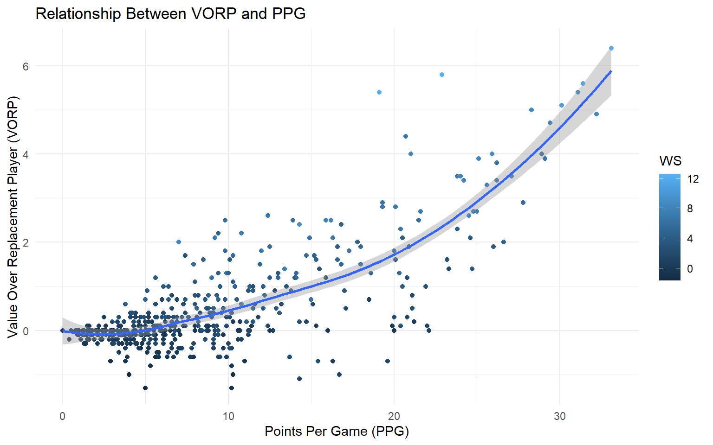
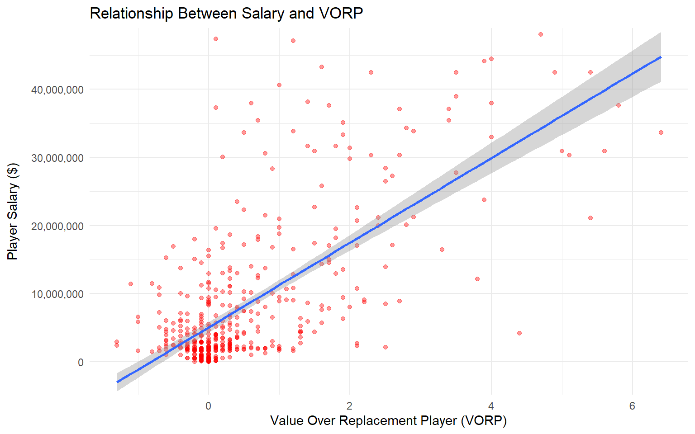

── Conflicts ────────────────────────────────────────── tidyverse_conflicts() ──
✖ dplyr::filter() masks stats::filter()
✖ dplyr::lag() masks stats::lag()
ℹ Use the conflicted package (<http://conflicted.r-lib.org/>) to force all conflicts to become errors
library(datasets)library(gapminder)
Warning: package 'gapminder' was built under R version 4.2.3
library(skimr)
Warning: package 'skimr' was built under R version 4.2.3
library(scales)
Attaching package: 'scales'
The following object is masked from 'package:purrr':
discard
The following object is masked from 'package:readr':
col_factor
library(ggthemes)
Warning: package 'ggthemes' was built under R version 4.2.3
library(hrbrthemes)
Warning: package 'hrbrthemes' was built under R version 4.2.3
NOTE: Either Arial Narrow or Roboto Condensed fonts are required to use these themes.
Please use hrbrthemes::import_roboto_condensed() to install Roboto Condensed and
if Arial Narrow is not on your system, please see https://bit.ly/arialnarrow
library(lubridate)library(ggridges)
Warning: package 'ggridges' was built under R version 4.2.3
library(DT)
Warning: package 'DT' was built under R version 4.2.3
#Introduction My dataset consists of statistical in-game data, categorical data, and salary data for every NBA player to register playing time in the 2022-23 NBA Season. I wanted to use this data to examine what statistics, specifically successful teams, are most putting weight into when deciding the allocation of dollars when constructing a team. Are the most successful teams still following an old-school approach of valuing basic statistics such as PPG, 3P%, and Minutes Played? Has the new wave of advanced stats such as VORP, Win Shares, and TS% taken over? I aim to find the best budget players in the NBA and the most important aspects of building a championship-caliber team.
nba_data<-read_csv("nba_stats_salary.csv")
#Salary Information For context, the mean salary for an NBA player for the 2022-23 season was $8,416,599. The salary cap for this $123,655,000. The Larry Bird Exception in the CBA allows teams to go over the salary cap to resign their own players. Thus, the best teams are constructed through savvy drafting and trades. A team must be smart in how they utilize the money they give out to avoid the dreaded overpaid player. Typically, the best budget players are still on their rookie contracts, which last four years after they are drafted. From there, players are eligible for max and supermax contracts, which had a maximum value of $48 million for this season.
#Statistics I looked at: Points Per Game (PPG) Assists Per Game (APG) Rebounds Per Game (RPG) Three Pointers Per Game Total Minutes Played Player Efficiency Rating (PER) (PTS + REB + AST + STL + BLK − Missed FG − Missed FT - TO) / GP. True Shooting Percentage (TS%) half the points scored divided by the sum of the field goals attempted and 0.475 times the free throws attempted. Usage Percentage (USG%) 100 times the sum of field goals attempted, a third of assists, turnovers and 0.44 times free throws attempted, all divided by the possessions Win Shares (WS) dividing the sum of the player’s marginal point production by his team’s marginal points per win, provides a more holistic overlook than PER and better accounts for defense. Box Plus-Minus (BPM) uses a player’s box score information, position, and the team’s overall performance to estimate the player’s contribution in points above league average per 100 possessions played (does not take into account minutes played) Value Over Replacement Player (VORP) converts the BPM rate into an estimate of each player’s overall contribution to the team, measured vs. what a theoretical “replacement player” would provide, where the “replacement player” is defined as a player on minimum salary or not a normal member of a team’s rotation.
#Observing Correlation Between Salary and These Statistics
ggplot(nba_data, aes(x = PTS, y = VORP)) +geom_point(aes(color = WS)) +labs(x ="Points Per Game (PPG)",y ="Value Over Replacement Player (VORP)", title ="Relationship Between VORP and PPG") +stat_smooth(method ="loess", formula = y ~ x, geom ="smooth")

As you can see, VORP is heavily dependent on win shares and points per game. Win shares is a better indicator than PPG in my opinion as it takes into account defense and other elements of the game beyond just scoring. As shown by the line of best fit, both have a strong positive relationship with VORP.
#Plotting the Relationship Between VORP and Salary
ggplot(nba_data, aes(x = VORP, y = Salary)) +geom_point(alpha =0.4, color ="red") +stat_smooth(method ="lm", formula = y ~ x, geom ="smooth") +scale_y_comma() +labs(x ="Value Over Replacement Player (VORP)",y ="Player Salary ($)", title ="Relationship Between Salary and VORP")+theme(axis.title.y =element_text(margin =margin(0, 10, 0, 0)))

Overall, VORP is positively correlated with salary. However, there are some extreme outliers in this plot that I wanted to further examine and provide context for.
#Creating a Criteria to Find the Most Overpaid/Underpaid Players I wanted to observe which players were outliers in my previous plot. To do this, I created two brand new variables and filtered a new dataset to eliminate small sample sizes that may skew the data. First, I created a dollar per point per game variable to determine which players provided the most/least scoring for how much they were paid. Then, I wanted only players that played a significant amount of games to avoid skewing the results, so I created a new dataset consisting of only players that played in 45+ games.
#Overpaid Players in 2022-23: Kevin Love (Cleveland Cavaliers/Miami Heat) $3,726,459.5 per Point Per Game $38,196,210 per 1 Value Over Replacement Player Joe Harris (Brooklyn Nets) $2,453,007.50 per Point Per Game $62,142,857 per 1 Value Over Replacement Player Gordon Hayward (Charlotte Hornets) $2,045,918.4 per Point Per Game $150,375,000 per 1 Value Over Replacement Player
#What Leads to Overpaid Players? 2 of the three players listed as examples in the previous slide were signed to max contracts while already in their late 20s, which is typically past the athletic prime for an NBA player. Harris also signed his lucrative deal in his late 20s. As a result, these players, by the time they reached the end of these massive deals, had clearly lost a step in their game due to a combination of both injuries and age. This led to teams paying costly “buyouts” in the case of Love and Hayward. The Nets, meanwhile, traded Harris following the season for a minimal return. While the basic stats do not look awful on the surface for these three players, their VORP shows their actual meaningful contributions to a team are minimal at best at this point. NBA teams finally recognized this only just recently with all three now playing bench roles at the end of the 2023-24 season.
#Underpaid Players in 2022-23 Desmond Bane (Memphis Grizzlies) $99,080.93 per Point Per Game $852,096.00 per 1 Value Over Replacement Player Austin Reaves (Los Angeles Lakers) $120,270.62 per Point Per Game $1.302,931.70 per 1 Value Over Replacement Player Immanuel Quickley (New York Knicks) $155,452.35 per Point Per Game $1,102,971.40 per 1 Value Over Replacement Player
#What Leads to Underpaid Players? None of the players listed in the previous slide were lottery (top 14) selections in their respective drafts. Bane and Quickley were late first round selections, while Reaves was not even drafted. However, all three carved out crucial roles on playoff teams in the 2022-23 season. This shows the importance of looking beyond just the lottery stage to find talent for a competitive team. While lottery players will make upwards of $5 million on rookie contracts, late first round and undrafted talent make well under $2 million. Additionally, teams can have restricted free agent rights to retain this talent. Elite teams need great role players and to properly navigate the salary cap, a bulk of this talent needs to be scouted and drafted in the later stages of the draft.
#Observing a Successful Team The model showing the relationship between VORP and Salary show teams prioritize VORP, and to an extent Win Shares, when deciding how to spend their cap space on their roster. However, signing lucrative extensions can end up costing teams their championship window as players succumb to age and injury. The Boston Celtics, one of the league’s best teams in recent years, propose an interesting case study on how to successfully allocate salary.
nba_data_celtics<-filter(nba_data_eligibleplayers, Team =="BOS")mean(nba_data_eligibleplayers$VORP)
[1] 0.8854093
mean(nba_data_celtics$VORP)
[1] 1.67
mean(nba_data_eligibleplayers$Salary)
[1] 11230766
mean(nba_data_celtics$Salary)
[1] 15389529
mean(nba_data_eligibleplayers$WS)
[1] 3.541637
mean(nba_data_celtics$WS)
[1] 5.04
mean(nba_data_eligibleplayers$DollarPerVORP)
[1] Inf
mean(nba_data_celtics$DollarPerVORP)
[1] 8581931
While the Celtics spend, on average, more money per player than other NBA teams, they are much more effective in how they allocate that money. They spend it on players with higher win shares and are able to get more VORP per dollar from their players than league average. This gives insight into how the Celtics have been so successful for years.
#Can We Accurately Predict Future Salaries with Just VORP? Given how VORP is a collection of multiple player metrics and statistics, could it be an accurate predictor of future salaries? I observed three players who became free agents following the 2022-23 season and utilized to slope of the line of best fit for the Salary-VORP graph. Donte DiVincenzo (GSW -> NYK) 1.3 VORP, Predicted Salary: ≈ $12,500,000, Actual Salary: $11,717,500 Bruce Brown (DEN -> IND) 0.9 VORP, Predicted Salary: ≈ $10,500,000, Actual Salary: $22,500,000 Austin Reaves (LAL) 1.2 VORP, Predicted Salary: ≈ $12,000,000, Actual Salary: $13,456,968
#Limitations of This Simple Model: A Strict VORP Model Cannot Account for a Player’s Age Intangibles League Reputation Salary Floor/Cap Loyalty/Hometown Discounts Supermax Contracts Contract Length